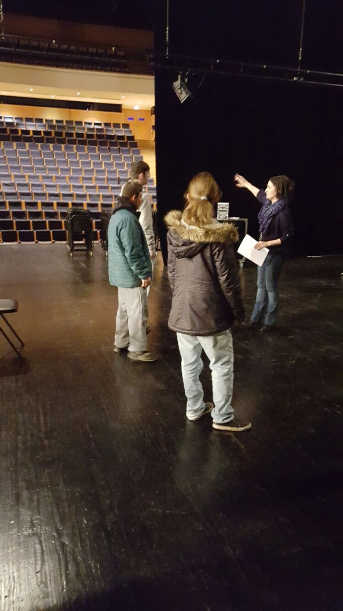
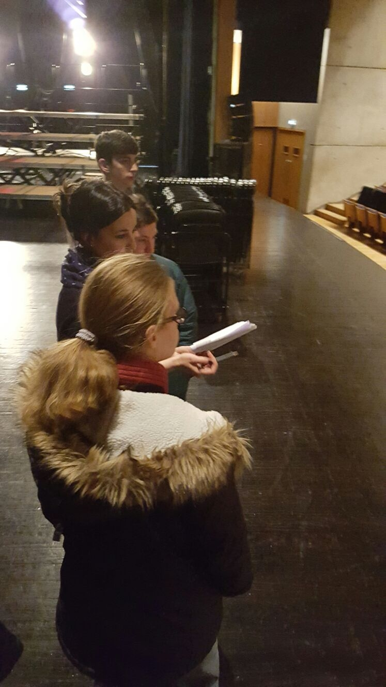
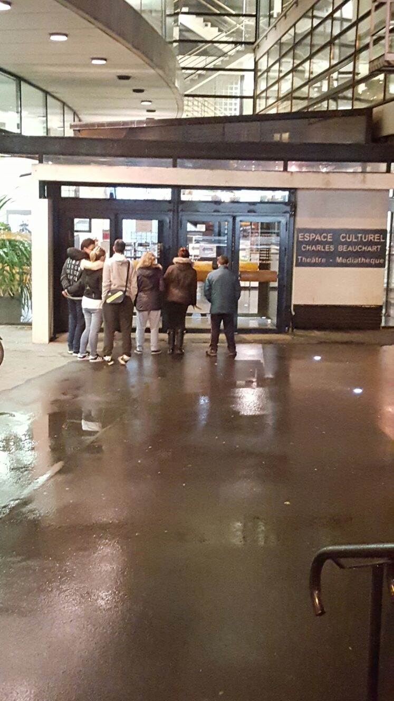

|
Mardi, 08 Mars 2016 00:00 |
Sortie au Théâtre du Luxembourg

|
Sortie le 18/02/2016 des 6 jeunes de la résidence de Quincy au Théâtre du Luxembourg
Nous avons visité le théâtre du Luxembourg qui se trouve à côté de la médiathèque de Meaux.
Nous avons vu la régie lumière, les loges, la salle du théâtre, le lieu de livraison des décors, la régie son, la régie plateau et la régie scène.
|
|
Les personnes qui travaillent au théâtre :
- Le directeur du Théâtre
- Le producteur de la pièce
- La billetterie
- Les comédiens
- Le metteur en scène
- Le gardien
- Le guide
- Le service communication
- Le directeur technique
- Les musiciens - les danseurs – les chanteurs
|
 |

|
La pièce était "touchante et triste"
|

|
|
Nous avons rencontré Guillaume, il a 33 ans, c’est le metteur en scène. Il nous a raconté sa vie.
Il était comédien, il a fait des pubs à la télé.
Il a commencé le théâtre à 14 ans.
Il a pris des cours dans une école de musique.
Il a parlé de la pièce, des clochards qui partaient à Nanterre au centre d’hébergement pour sdf.
La pièce est tirée de livre de Patrick Declerck.
Résumé de la pièce
La pièce parle de Patrick Declerck qui s’est déguisé en clochard pour voir ce qu’ils vivaient. Il explique comment vivaient les gens au centre d’hébergement de Nanterre.
Nos impressions : touchant et triste, ce n’était pas drôle, j’ai aimé une partie et l’autre non, j’ai aimé le début mais pas la fin. |
|
|
|
Mise à jour le Mardi, 22 Mars 2016 15:25 |